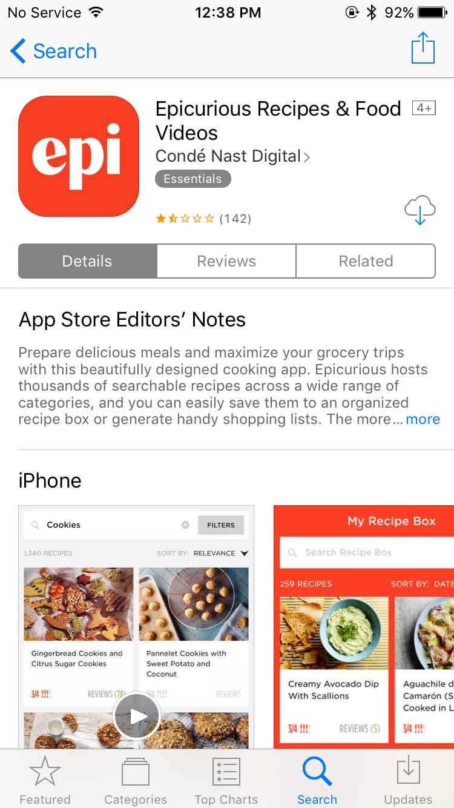
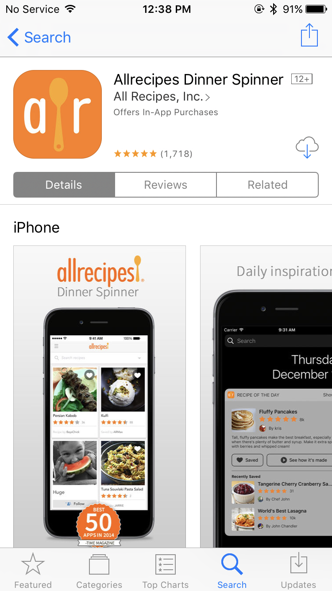
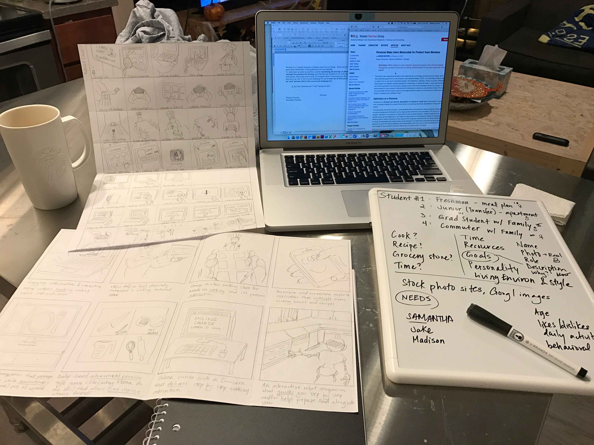
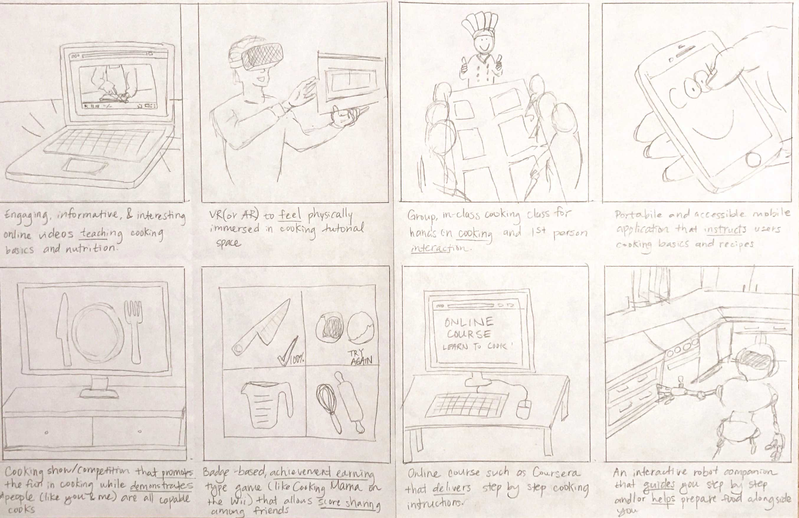
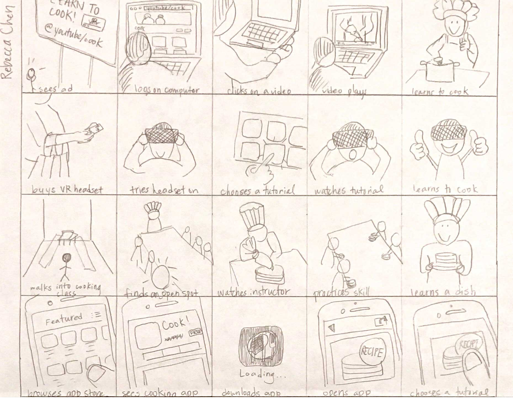
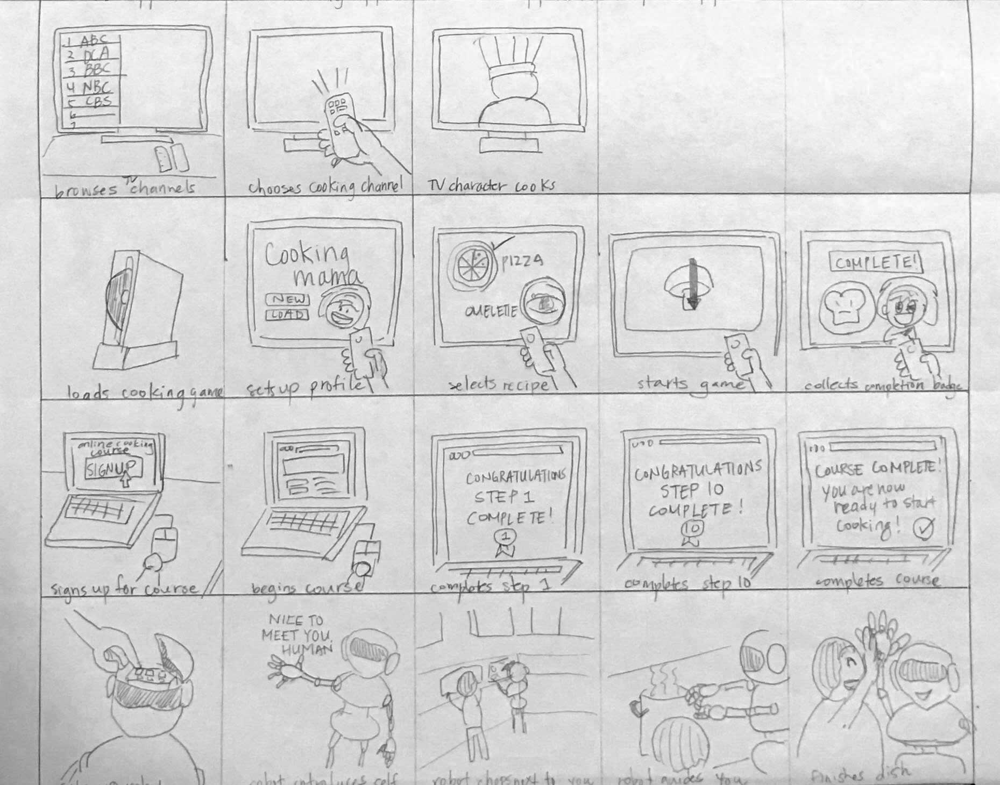
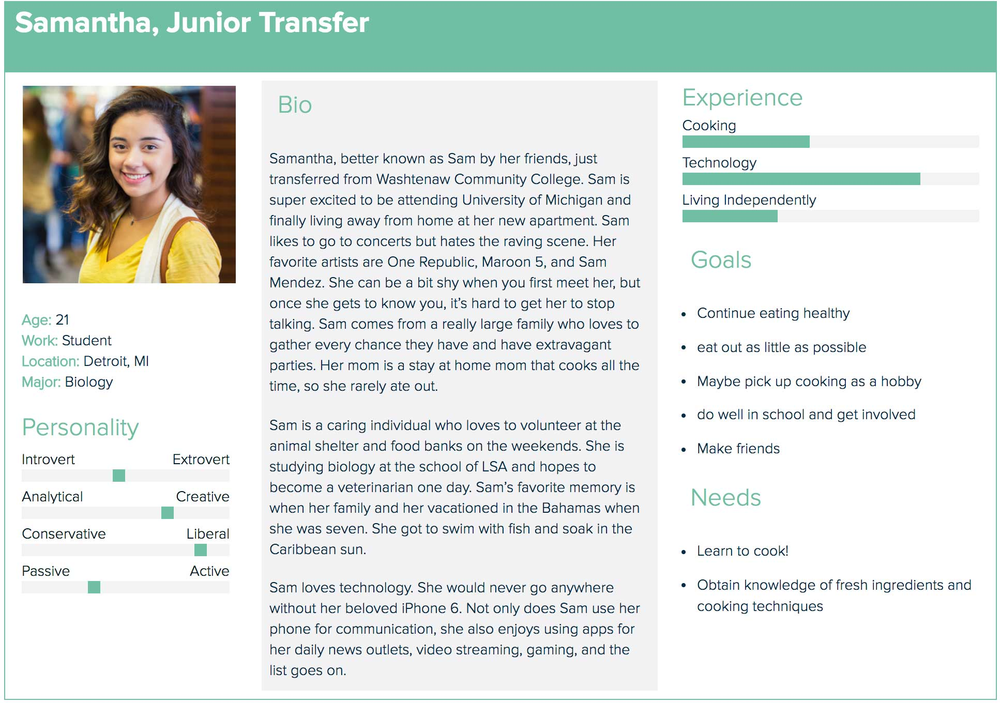
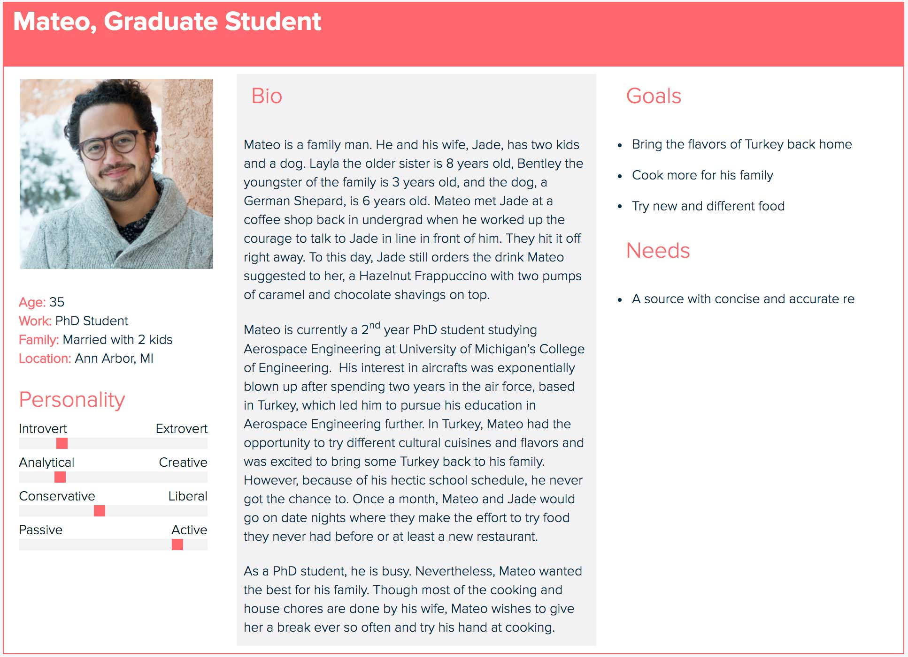
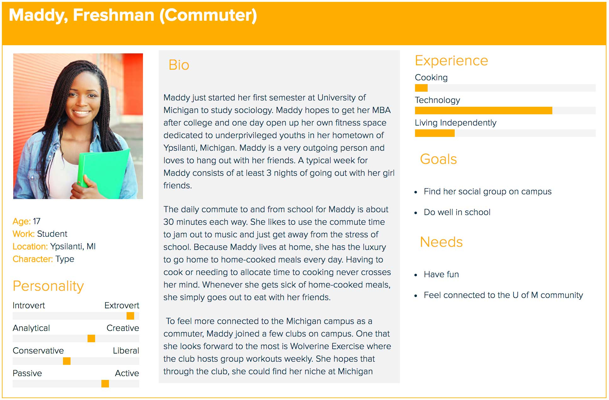
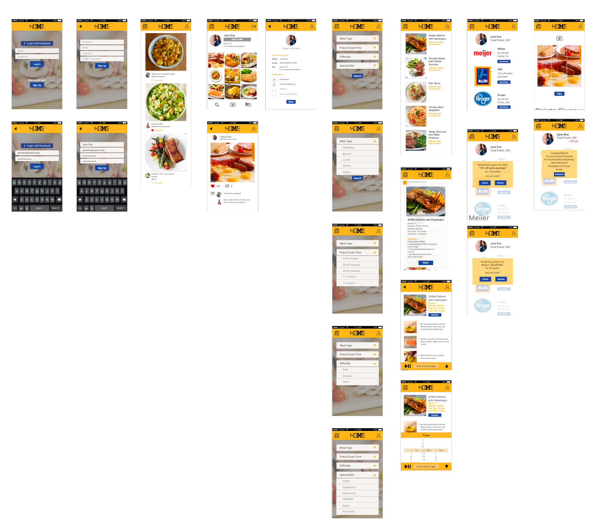

An individual class project focusing on interaction design. The project took place over a span of 3 months (Sept—Dec 2016).
Recorded overview of HOME in action
Often, college is the first time young adults move away from the comfort of their home to being solely responsible for everything, from succeeding in commitments to living independently. It is already draining and stressful being a student, people often neglect the importance of eating a proper meal. Many who do not cook find cooking to too expensive, too time consuming, or that they simply do not have the skill.
Ann Arbor, MI. is a college town filled with predominantly students. My primary target audience is the Univeristy of Michigan students who do not have prior knowledge in cooking. My secondary target audience is the students who know the basics, but would like to find recipes that best suit their needs.
"As a student, I need an affordable and reliable source of food so that I can survive the long hours of school, extracurricular, and social activities."
Current solutions target incorrect audiences, have too narrow of focus, and often face limited resrouces.
1 - Epicurious Recipes & Food Videos
| Strengths | Weaknesses |
|---|---|
|
|
2 - Allrecipes Dinner Spinner
| Strengths | Weaknesses |
|---|---|
|
|
I found that users value portability, ease of use, personalization of recipe search, and immediate gratification.
Users were invovled in all stages of the process, such as limiting the scope of the ideated solutions and user runthroughs of prototypes.
"A technological infrastructure that is straightforward and provides an outlet for students to learn the basics of cooking and to live a healthier life."
User follows step-by-step instructions to self-selected recipes. The more the user cooks and shares, the more points he or she earns toward redeeming coupons to grocery stores around Ann Arbor.
Snapshot of my workspace.
Brainstormed possible solutions to my design problem. The ideas were drawn from exisiting products and with the intent of having more diversity than the same solution with slightly different approaches.
Ideation of possible solutions.
From the solution sketches, I sketched out 5 worksflows to convey how the solution is used to approach my design problem.
Solutions 1-4.
Solutions 5-8.
Developed personas for my target users. The intent was to diversity the characteristics amongst the personas to illustrate a wide range of user needs, motivations, skill levels, etc.
Persona 1: transfer student looking to learn to cook
Persona 2: older, graduate student cooking for his family
Persona 3: anti-persona, has no interest in cooking
Used low cost materials to quickly assemble a low-fidelity mock up of my final design solution, a mobile app. The goal of this paper prototype is to illustrate user flows and interactions and be able to justify my design decisions.
Based on the feedback of user testing on the low-fidelity paper prototype, changes were made and translated into a high-fidelity digital prototype. The digital prototype has much more interactions designed and implemented.
Try out the app HERE
